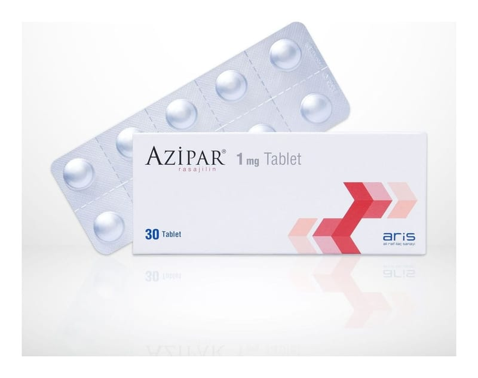

Azipar 1 mg Tablet, Tablet, 30 Adet

Ne için kullanılır
KT · Bölüm 1AZİPAR®, etkin madde olarak 1 mg rasajiline eşdeğer 1,56 mg rasajilin mesilat içerir.
AZİPAR®, kutuda, Alu/Alu blister ambalajlarda 30 ve 100 tablet olarak hasta kullanımına sunulmaktadır. AZİPAR®tabletler, beyaz-beyaza yakın yuvarlak, her iki yüzünde çentik bulunan düz tablettir. Çentiğin amacı yutmak için tabletin kırılmasını kolaylaştırmaktır. AZİPAR®, Parkinson hastalığının tedavisinde kullanılır. Parkinson hastalığında, beyinde dopamin üreten hücrelerin kaybı söz konusudur. Dopamin
beyinde hareket kontrolünde rol alan bir kimyasaldır. AZİPAR®, beyinde dopamin düzeylerinin artmasına ve devam etmesine yardımcı olur.